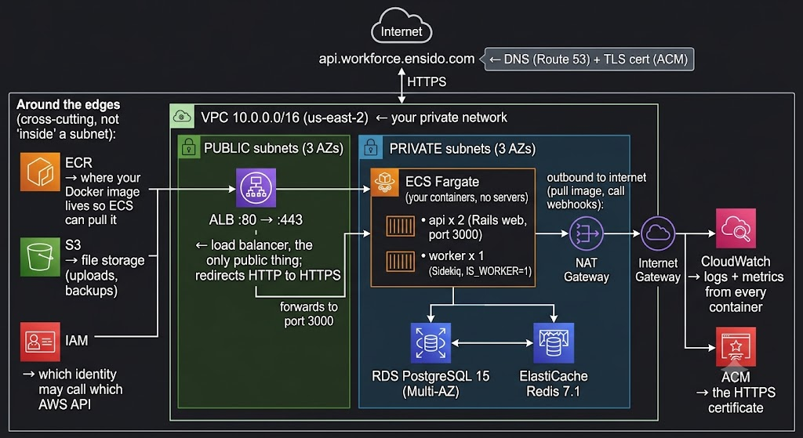

You run a Rails + Sidekiq app in production on AWS today.
Someone else wrote the Terraform. This course closes that gap.
Look at any resource "aws_..." block and know what AWS thing it creates and why.
Walk another backend engineer through the whole stack in 20 minutes. Same way you'd trace a Rails request.
Write correct infra with an agent — and catch it when it writes something insecure or expensive.
We're not learning Terraform syntax. We're learning what each AWS piece is and how the pieces connect.

A Sidekiq job is the same path minus the ALB. Outbound calls go: private subnet → NAT Gateway → Internet Gateway. → lesson 03
Network first → servers → traffic in → data → observability. Each lesson is the last slide's "zoom into one box." 250 AWS services exist. You need ~15 to run a Rails app well.
Your private network 10.0.0.0/16 in us-east-2. Everything else lives inside.
3 public + 3 private /20 slices across 3 AZs. ALB in public; everything else private.
IGW = public door. NAT = private outbound only. Route table makes a subnet "public."
Allow-only, stateful. ALB allows 80/443; app allows 3000 from ALB; RDS allows 5432 from app.
Who may call which AWS API. Task role grants ECR pull + CloudWatch write + Secrets read.
Private Docker registry. CI pushes; ECS pulls at task start.
Runs your containers — no servers. api ×2 + worker ×1. Service keeps N copies alive.
HTTP load balancer. :80 redirect → :443 → containers on :3000. Health-checks /up.
DNS maps domain to ALB. ACM issues & auto-renews the TLS cert.
Managed Postgres. Multi-AZ failover, 30-day backups, you never patch it.
Managed Redis for caching + Sidekiq queue. cache.t4g.micro.
Logs + metrics. Every container streams stdout here. How you see a crashing task.
Can a network packet travel from here to there on this port?
Is this identity allowed to call this AWS API action on this resource?
Your app can have perfect network access to S3 and still get AccessDenied — IAM said no. Or have IAM permission to read a secret and still time out — no network path. When something breaks: first question is always network or permission? App engineers constantly fix the wrong one.
The hook + short terms list
The one idea to internalize, then the teaching
What it costs idle, what breaks if misconfigured
Annotated resource blocks — each arg mapped to a concept
The concept tied back to your real production stack
Build / Probe / Quiz / Refactor prompts
Questions to answer before moving on + common bugs
Reusable agent prompts + pointer to the next box
The loop: Inspect → Propose → Explain → You confirm → Apply → Verify. Docs & the plan output outrank the agent's confidence — you own the architecture.
Fifteen lessons. One real architecture. The same stack you already run in production — named, traced, explained, box by box.
Every lesson is "zoom into one box in the diagram you just saw." You already know the system — you're about to understand it.
The outermost box. Your 10.0.0.0/16 private network. The one decision that's genuinely hard to change later.